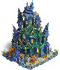

Получено: файл; исходный URL. Исходный файл без перекодирования с альтернативного хоста; совпадение байтов с оригинальной ссылкой не проверено. Страница: источник.
Дом привидений — Хэллоуин 2014
историческая браузерная социальная игра; платформа и редакция уточняются- Тип
- Праздничная постройка
- Версия и дата
- историческая браузерная социальная игра; платформа и редакция уточняются
Данные по источнику · браузерная игра; платформа не уточнена · октябрь 2014 — дата статьи; дата поздних правок не установлена
Предварительно: Фанатский источник; возможны ошибки, разночтения и изменения редакций.. Требуется сверка.
- Цена
- Статья указывает покупку 500 000 монет, продажу 50 000; на момент текста уже не продавался.
- Стадии
- 10, 25, 50, 100, 250, 60, 300, 400 и 500 Барабашек. Перечисленные числа действительно дают 1695; необычная шестая стадия 60 приведена без исправления, требует независимого подтверждения.
- Механика
- Друзья оставляют Барабашек; по статье они живут в доме 12 часов. Превращение приносит подарки в зависимости от стадии, точные вероятности не указаны.


Связанные сущности
- Барабашка — материал 2014 — материал строительства